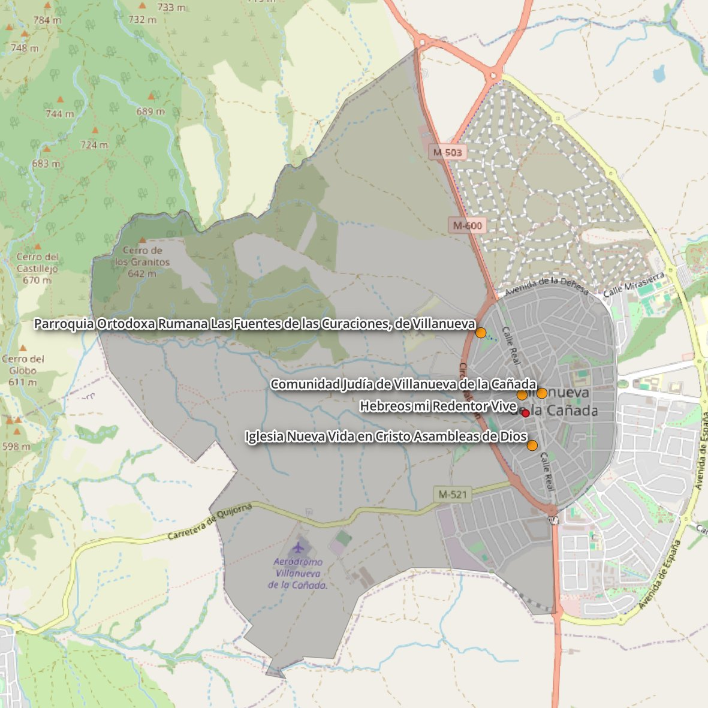
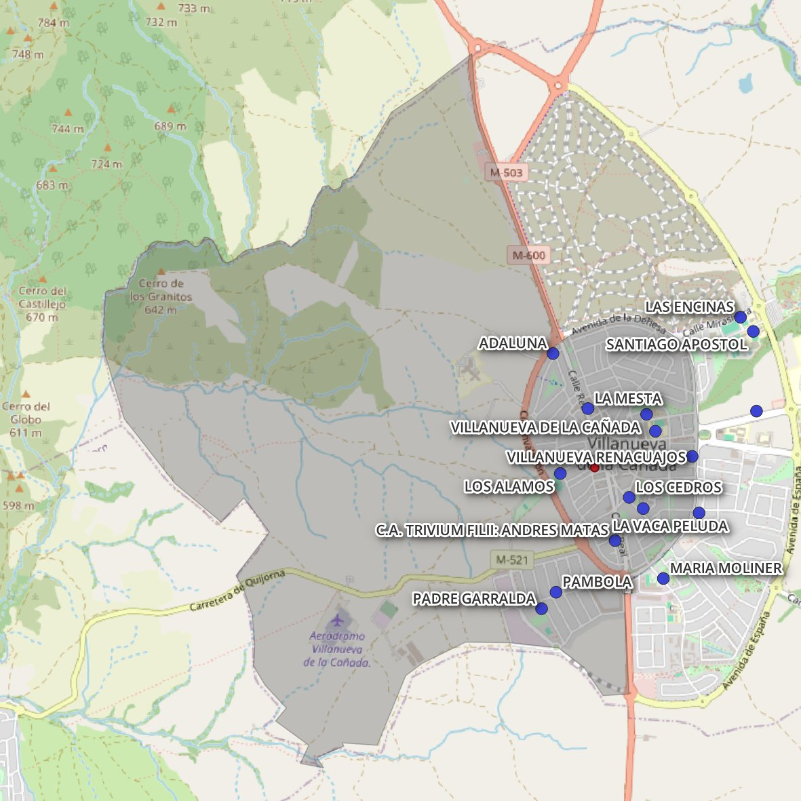

Puntos de interés en el territorio parroquial
Parroquia Santiago Apóstol (Villanueva de la Cañada) · Arciprestazgo de Villaviciosa de Odón
Entidades religiosas no católicas

4 entidades religiosas no católicas en el territorio de la parroquia.
Evangélicos (2)
- Hebreos mi Redentor ViveTravesía Patios 3, Villanueva de la Cañada
- Iglesia Nueva Vida en Cristo Asambleas de DiosCalle Paneras 21, Villanueva de la Cañada
Judíos (1)
- Comunidad Judía de Villanueva de la CañadaCalle Luna 6, Villanueva de la Cañada
Ortodoxos (1)
- Parroquia Ortodoxa Rumana Las Fuentes de las Curaciones, de VillanuevaCalle de Francisco Pizarro 132, Villanueva de la Cañada
Fuente: Registro de Entidades Religiosas del Ministerio de la Presidencia, Justicia y Relaciones con las Cortes. Situación en el mapa: dirección geocodificada con CartoCiudad (IGN) o Nominatim (OpenStreetMap).
Centros educativos

8 centros educativos en el territorio de la parroquia (público: 5, privado: 3).
| Centro | Tipo | Titularidad | Domicilio | Web |
|---|---|---|---|---|
| EQUIPO ATENCÍON TEMPRANA VILLANUEVA DE LA CAÑADA | Equipo de orientación educativa y psicopedagógica. Atención temprana | Público | Camino Móstoles, 1, 28691 Villanueva de la Cañada | Página web |
| LA MESTA | Centro público de educación de personas adultas | Público | Calle Real, 7, 28691 Villanueva de la Cañada | Página web |
| LOS CEDROS | Escuela infantil | Público | Camino Móstoles, 1, 28691 Villanueva de la Cañada | Página web |
| LYCÉE FRANÇAIS INTERNATIONAL MOLIÈRE (FRANCÉS) | Centro docente extranjero en España | Privado | Calle Cristo, 27, 28691 Villanueva de la Cañada | Página web |
| PADRE GARRALDA | Colegio de educación infantil, primaria y secundaria | Público | Calle Sierra Nevada, 32, 28691 Villanueva de la Cañada | Página web |
| PAMBOLA | Escuela infantil privada | Privado | Avenida Sierra de Gredos, 14, 28691 Villanueva de la Cañada | Página web |
| VILLANUEVA DE LA CAÑADA | Escuela municipal de música y danza | Público | Calle Olivar, 10, 28691 Villanueva de la Cañada | Página web |
| VILLANUEVA RENACUAJOS | Escuela infantil privada | Privado | Calle Dulcinea, 18, 28691 Villanueva de la Cañada | Página web |
Fuente: registro de centros educativos de la Comunidad de Madrid. Solo se recogen los centros de alta.